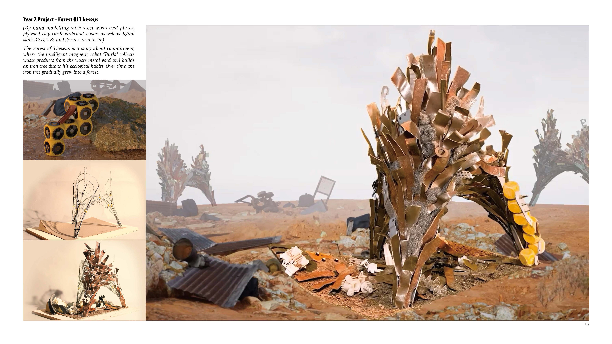
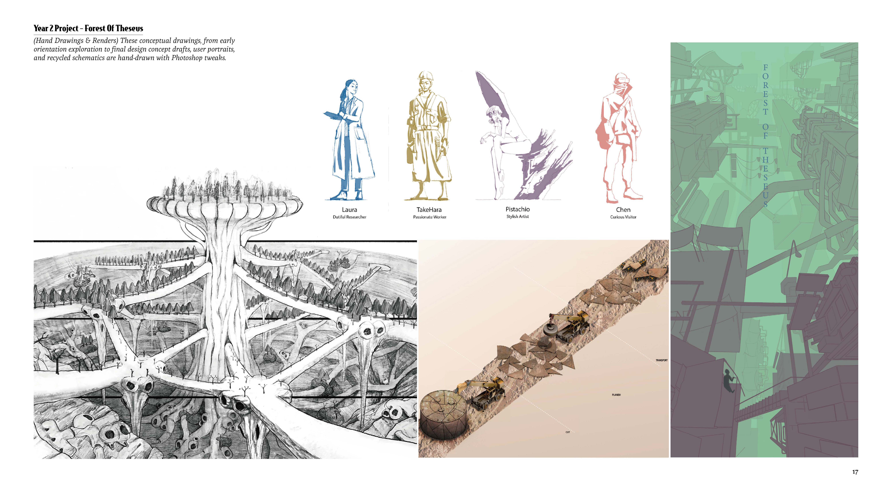
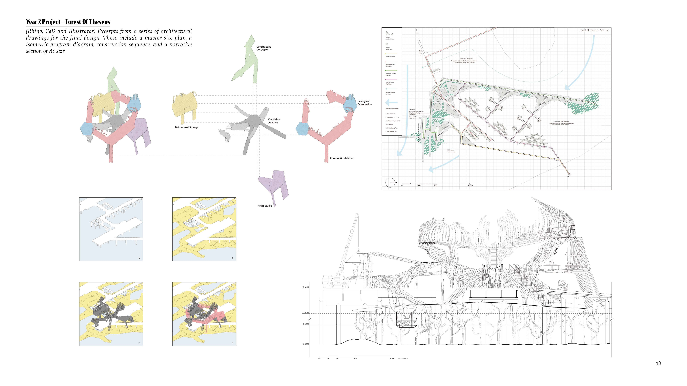
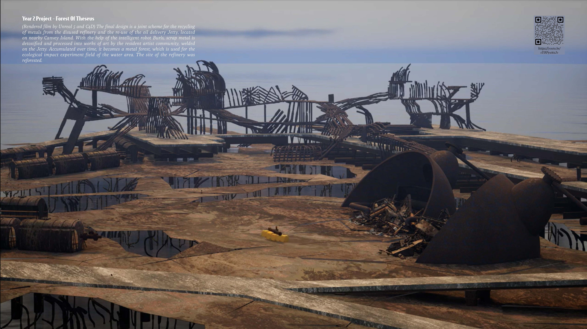
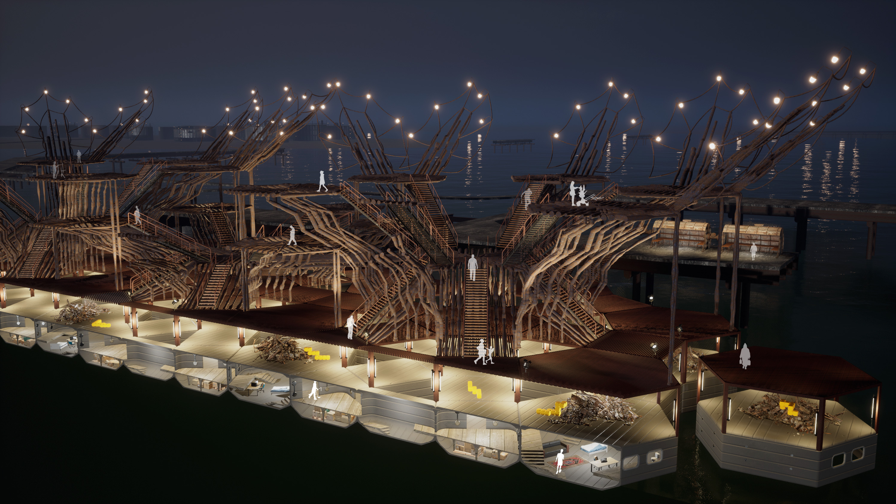

“Forest of Theseus” draws inspiration from a famous philosophical paradox from ancient Athens: if every part of a ship is gradually replaced over time, is it still the same ship? If the discarded old parts were reassembled into a new ship, which one would truly be the Ship of Theseus?
If inorganic matter could grow along the natural trajectory of plant life, and, through programmable robotics and artificial intelligence, establish a wholly new form of symbiosis—could we then define this system as a new kind of lifeform and ecosystem?
In its early stages, the project went through a period of stylistic and conceptual exploration, aiming to uncover the various possibilities of human habitation within post-industrial ruins.
The philosophical inquiry of the Ship of Theseus is reimagined through a real site near the estuary in East London, where an abandoned oil refinery sits beside a disused jetty. The project proposes a phased dismantling of the refinery, to be replaced over time by a gradually planted forest.
Simultaneously, salvaged metal from the demolition will be relocated and installed onto the jetty, forming a "forest of steel" that grows in tandem with the woodland—each mirroring the other.
Together, they become a cultural park dedicated to environmental awareness and ecological regeneration.
Project short film.